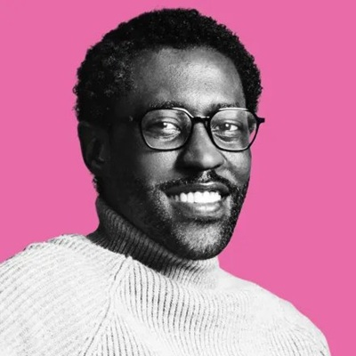
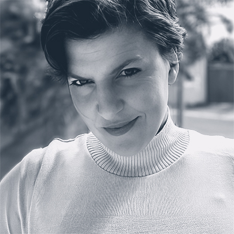

Tech Heroes
Leopold Green
Leopold Green is an Assistant Professor of Biomedical Engineering at Purdue University. Dr. Green earned his Bachelor’s degree in chemistry from Hampton University, and then went on to pursue his doctoral studies at the University of California, Riverside. Professor Green’s work focuses on creating biological therapeutics to treat chronic illnesses. To do this, Dr. Green uses synthetic DNA to create tudes, which can be put into cells and allow proteins or other chemicals to pass through. This can dramatically alter how the cells work. This approach can be used, Dr. Green hopes, to treat chronic illnesses. He states that this work is a “beautiful balance of art and science and engineering.”
Dr. Green a Black Trailblazers in Engineering Fellow at Purdue University in 2021. This program gives PhD students and postdocs an opportunity to attend a workshop that will foster skills, facilitate networking, and get an idea of what academic life is like. Dr. Green has also been committed to fostering diversity in academics by serving as a for the Center of Diversity at Caltech. He is also a member of Black Scientists and Engineers and a graduate advisor for the National Society of Black Engineers. By participating in these programs and societies, Dr. Green is able to aid emerging Black engineers and help foster a more diverse academic community. According to a study from Georgetown*, as of 2019, only 4% of the engineering workforce is made up of Black individuals. While the number of people of color graduating with STEM degrees is increasing, there is still a long way to go in creating more equal opportunities. Thus, mentorship from already successful and established Black engineers through organizations like the National Society of Black Engineers is a way these opportunities can be created and also aids in creating a strong professional network for young Black scholars.
We chose Dr. Green as our tech hero because his work intersects with our own lives in different ways. Mike has worked in a healthcare adjacent field for over 10 years, and was diagnosed with glaucoma at the age of 16. Dr. Green's work appealed to Sam because she has dealt with chronic illness in her life, and has been fascinated with new ways to treat various illnesses.
To learn more about Professor Green’s work, see the resources linked below:
*To learn more about the study conducted by Georgetown's Center on Education and the Workforce: Mission Not Accomplished Unequal Opportunities and Outcomes for Black and Latinx Engineers
Yasodara Córdova
Yasodara Córdova, who also goes by Yaso, is a researcher and engineer from Brazil working in the fields of privacy, digital identity, and responsible AI (RAI). Before working in the tech industry proper, she was a citizen journalist whose work earned the Vladimir Herzog Award twice. Her work in the tech world includes building standards for the W3C, pushing female hacker spaces forward, serving as a consultant at Harvard, and using open data to assist countries in developing and integrating infrastructure to allow more citizen participation and find corruption among officials while a fellow at the World Bank. In Brazil she served as CEO of ‘Serenata de Amor Operation”, a project which utilizes open data and AI to analyze public spending and find fraud. Until February of 2025 she was the chief privacy officer at Unico IDtech, a company that provides digital identity and identity verification services.
As a woman of color from the so-called “Global South”, Yasodora brings a unique perspective on privacy, security, and identity that is easily excluded in Europe and the U.S. This is especially meaningful given the United States’ history of exploiting Latin American countries. Her work with organizations like the World Bank and research into RAI are focused on promoting citizen participation in government and stopping corrupt officials which can be seen as promoting democracy and resisting the authoritarian control that oligarchs thrive under. Yaso has been involved in hackerspaces for women including founding one of the first spaces in Brazil. She also promotes and speaks at events hosted by groups like PyLadies, that have the mission of helping marginalized people learn to code and become leaders in the tech industry.
The technology that many of us use today fails to treat us as human, only as potential profit. There must be more perspectives in technology, especially if there are to be systems that have respect for privacy. From a journalist sharing the stories of those living on the outside of society to a technologist researching and engineering tools that promote democracy and respect privacy, it is because of Yasodora’s many identities that her work puts people at the forefront.
Mike is interested in Yasodora's work for myriad reasons. Chief among them is the rate at which companies fail to protect user data while governments increasingly seek to remove privacy protections. Additionally, her work on RIA has important implications for the use of AI in healthcare.